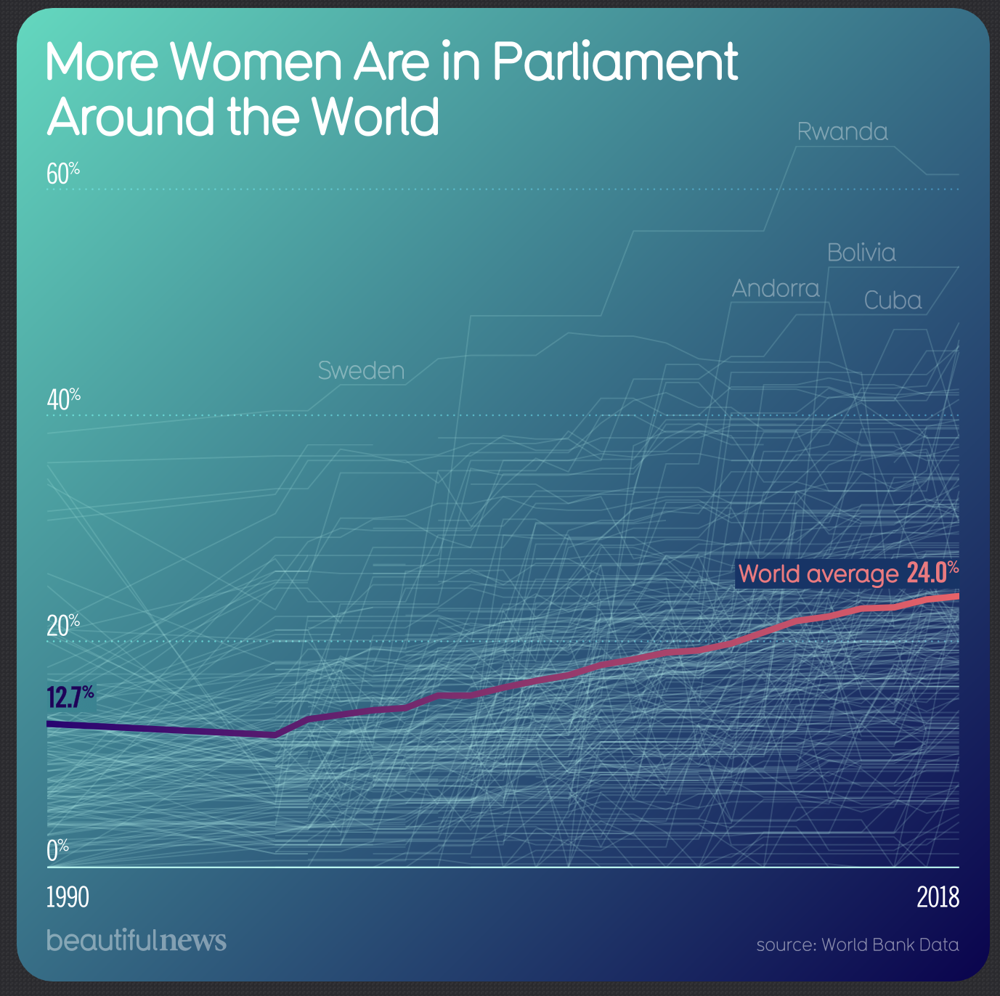

Visualization

Source: [Source Name]
Critique
Information Resolution
This visualization clearly shows its main message: women’s representation in parliament has grown worldwide over time. The bold line for the world average helps viewers see the trend and keeps the chart from feeling too busy. It’s easy to notice the steady increase from about 12.7% in 1990 to around 24% in 2018, which highlights long-term progress. Still, while the overall trend is clear, the chart makes it hard to see details. With so many country lines overlapping, it’s tough to focus on individual countries or compare them unless they are labeled. So, this visualization works best for a general overview, not for detailed analysis.
Additional Concern 1
YOne of the main problems with this graphic is that it feels crowded. The background has many thin lines for each country, and they blend together. This does show the global scale of the issue, but it also creates visual noise that can distract from the main point. Only a few countries, like Rwanda and Sweden, are labeled, so the rest of the data feels anonymous. If someone wants to follow a single country or compare regions, the clutter can be frustrating. The chart could work better if it let viewers filter or group the data instead of showing everything at once./p>
Additional Concern 2
One drawback of this visualization is that it shows what is happening but does not explain why. The rise in women’s representation is clear, but the chart does not give any background on the political, social, or legal factors behind these changes. For instance, some countries have adopted gender quotas or changed their election systems, while others have seen cultural changes or grassroots activism. Without this background, viewers have to interpret the data themselves, which can make a complex issue seem too simple. Adding short notes or references to important policy changes would have made the visualization more helpful.
Conclusion
YThis visualization does a good job of showing global progress and highlighting the increasing number of women in parliament. The world average stands out and makes the main trend clear. Still, the chart feels crowded and could use more explanation to help viewers understand the data better. As a quick overview, it works well, but it would be even better with a clearer layout and more background on the numbers.